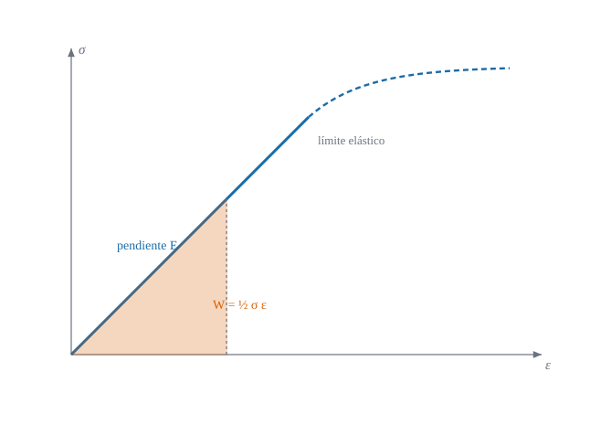

De 81 coeficientes a dos constantes, y la tensión plana

Figura 15.1: Ley de Hooke uniaxial: la tensión es proporcional a la deformación hasta el límite elástico (pendiente \(E\)) y la energía de deformación por unidad de volumen, \(W=\tfrac12\sigma\varepsilon\), es el área del triángulo naranja.
Cuántas constantes hacen falta para relacionar tensiones y deformaciones, y qué se simplifica en una lámina delgada
Objetivos y prerrequisitos
Objetivos. Al terminar el tema sabrás:
escribir la ley de Hooke generalizada \(\sigma^{ij}=C^{ijkl}\varepsilon_{kl}\) y razonar por qué tiene 81, 36, 21 o 2 constantes según las simetrías;
escribir el tensor isótropo con \(\lambda\) y \(\mu\) y pasar a \(E\) y \(\nu\);
calcular la energía de deformación y justificar por qué \(E>0\) y \(-1<\nu<\tfrac12\);
deducir la ley de tensión plana y obtener su matriz \(3\times3\);
comprobar en Julia que Hooke es un tensor (vale en polares).
Un material elástico lineal tiene una relación lineal entre la tensión y la deformación, que se escribe con un tensor de orden cuatro: \[
\sigma^{ij}=C^{ijkl}\,\varepsilon_{kl}.
\tag{15.1}\]
El tensor \(C^{ijkl}\) tiene \(3^4=81\) componentes en 3D. Las simetrías las reducen:
Simetría
Razón
Componentes independientes
ninguna
—
81
\(C^{ijkl}=C^{jikl}\)
\(\sigma^{ij}\) simétrico
54
\(C^{ijkl}=C^{ijlk}\)
\(\varepsilon_{kl}\) simétrico
36
\(C^{ijkl}=C^{klij}\)
existe una energía de deformación \(W(\varepsilon)\)
21 (material anisótropo general)
isotropía
sin direcciones privilegiadas
2
Con las dos primeras simetrías, \(\sigma\) y \(\varepsilon\) son vectores de 6 componentes y \(C\) una matriz \(6\times6\) (36 coeficientes); la simetría respecto de la energía la hace simétrica (21).
TipIdea clave
\(C^{ijkl}\) es un tensor: sus componentes cambian al cambiar de coordenadas con la ley de transformación de orden cuatro. Si se escribe con la métrica, como en el caso isótropo, vale en cualquier sistema sin más trabajo (Sección 15.5).
15.2 Isotropía
Proposición 15.1 (Ley de Hooke isótropa) Un material isótropo y elástico lineal queda caracterizado por dos constantes, las de Lamé\(\lambda\) y \(\mu\): \[
C^{ijkl}=\lambda\,g^{ij}g^{kl}+\mu\bigl(g^{ik}g^{jl}+g^{il}g^{jk}\bigr),\qquad
\sigma^{ij}=\lambda\,(\varepsilon^k{}_k)\,g^{ij}+2\mu\,\varepsilon^{ij} .
\tag{15.2}\] En términos del módulo de Young \(E\) y el coeficiente de Poisson \(\nu\): \[
\mu=G=\frac{E}{2(1+\nu)},\qquad \lambda=\frac{E\,\nu}{(1+\nu)(1-2\nu)},\qquad
\varepsilon_{ij}=\frac1E\Bigl[(1+\nu)\,\sigma_{ij}-\nu\,\sigma^k{}_k\,g_{ij}\Bigr] .
\tag{15.3}\]
Un tensor de orden cuatro isótropo (invariante por cualquier rotación) se construye solo con la métrica, porque no hay otro tensor invariante que se pueda formar con índices libres; las tres combinaciones posibles \(g^{ij}g^{kl}\), \(g^{ik}g^{jl}\), \(g^{il}g^{jk}\) se reducen a dos por la simetría \(C^{ijkl}=C^{ijlk}\). De ahí ecuación 15.2. Para ver la relación con \(E,\nu\): en tracción uniaxial \(\sigma^{11}=\sigma\) (cartesiano), ecuación 15.2 da \(\varepsilon_{11}=\sigma/E\) con \(E=\mu(3\lambda+2\mu)/(\lambda+\mu)\) y \(\varepsilon_{22}=-\nu\varepsilon_{11}\) con \(\nu=\lambda/(2(\lambda+\mu))\); invirtiendo se obtienen ecuación 15.3. \(\square\)
Ejemplo 15.1 (Ejemplo resuelto: constantes del acero) Con \(E=210\,000\) MPa y \(\nu=0{,}3\): \[
\mu=\frac{210\,000}{2\cdot1{,}3}=80\,769\ \text{MPa},\qquad
\lambda=\frac{210\,000\cdot0{,}3}{1{,}3\cdot0{,}4}=121\,154\ \text{MPa}.
\] En tracción uniaxial de \(\sigma=100\) MPa: \(\varepsilon_{11}=100/210\,000=4{,}76\cdot10^{-4}\) y \(\varepsilon_{22}=\varepsilon_{33}=-0{,}3\cdot4{,}76\cdot10^{-4}=-1{,}43\cdot10^{-4}\).
Pon a prueba lo anterior. Los ejercicios se corrigen en tu navegador y no envían nada a ningún sitio.
Para \(E=210\,000\) MPa y \(\nu=0{,}3\), ¿cuánto vale el módulo de cortante \(\mu=G\)?
\(G=E/(2(1+\nu))=210\,000/2{,}6=80\,769\) MPa.
¿Cuántas constantes elásticas independientes tiene un material isótropo elástico lineal?
1
2
21
36
Dos (\(\lambda,\mu\) o, equivalentemente, \(E,\nu\)). 21 es el caso anisótropo general y 36 es el número antes de imponer la simetría de la energía.
NotaUn poco de historia: «ut tensio, sic vis»
Robert Hooke enunció su ley de la elasticidad en forma de anagrama latino en 1676 y publicó la solución en 1678: ut tensio, sic vis («como la extensión, así la fuerza»). En esa obra afirmaba conocer la ley desde 1660. La proporcionalidad entre fuerza y deformación es lo que permite escribir, en el límite de pequeñas deformaciones, la relación lineal ecuación 15.1; su generalización a tensores de orden cuatro vino más de un siglo después, con la teoría del continuo de Cauchy.
Fuentes (secundarias): Hooke’s law, Wikipedia; Hooke’s Law, Princeton MAE. Las fuentes dan fechas distintas para el primer enunciado (1660, 1676); no se verificó la generalización de Cauchy ni la de Green con fuentes específicas. Consultado el 21-10-2026.
15.3 Energía de deformación
La energía almacenada por unidad de volumen es \[
W=\tfrac12\,\sigma^{ij}\varepsilon_{ij}=\tfrac12\,C^{ijkl}\varepsilon_{ij}\varepsilon_{kl}.
\tag{15.4}\] Su derivada respecto de la deformación es la tensión: \(\sigma^{ij}=\partial W/\partial\varepsilon_{ij}\). Para que el material sea estable (energía positiva para cualquier deformación no nula) hace falta \(\mu>0\) y \(3\lambda+2\mu>0\), es decir, \[
E>0,\qquad -1<\nu<\tfrac12 .
\]
AdvertenciaErrores frecuentes
\(\nu=0{,}5\) no es «material normal»: es el límite incompresible (\(\lambda\to\infty\)), donde la ley de Hooke con \(E,\nu\) deja de ser útil sin una formulación especial.
\(W=\tfrac12\sigma\varepsilon\) solo vale en el régimen lineal: en la curva no lineal del dibujo, la energía es el área bajo la curva, no un triángulo.
15.4 Tensión plana
En una lámina delgada se supone que la tensión normal a la superficie media es nula, \(\sigma^{33}=0\) (la carga en el espesor es despreciable). Entonces \(\varepsilon_{33}\) ya no es libre: se condensa.
Proposición 15.2 (Tensión plana) Con \(\sigma^{33}=0\) la ley de Hooke isótropa se reduce a un problema bidimensional con las constantes \[
\lambda^*=\frac{E\nu}{1-\nu^2},\qquad \mu=\frac{E}{2(1+\nu)},\qquad
C^{\alpha\beta\gamma\delta}=\lambda^*a^{\alpha\beta}a^{\gamma\delta}+\mu\bigl(a^{\alpha\gamma}a^{\beta\delta}+a^{\alpha\delta}a^{\beta\gamma}\bigr),
\tag{15.5}\] y en una base ortonormal la matriz en notación de Voigt \((\varepsilon_{11},\varepsilon_{22},2\varepsilon_{12})\) es \[
D=\frac{E}{1-\nu^2}\begin{pmatrix}1&\nu&0\\\nu&1&0\\0&0&\tfrac{1-\nu}2\end{pmatrix}.
\tag{15.6}\] Equivale a la condensación estática \(C^{\alpha\beta\gamma\delta}=E^{\alpha\beta\gamma\delta}-E^{33\alpha\beta}E^{33\gamma\delta}/E^{3333}\) del tensor 3D.
De \(\sigma^{33}=\lambda\,\mathrm{tr}\,\varepsilon+2\mu\,\varepsilon_{33}=0\) con \(\mathrm{tr}\,\varepsilon=\varepsilon^\alpha{}_\alpha+\varepsilon_{33}\) se despeja \(\varepsilon_{33}=-\dfrac{\lambda}{\lambda+2\mu}\,\varepsilon^\alpha{}_\alpha\). Sustituyendo en \(\sigma^{\alpha\beta}=\lambda(\varepsilon^\gamma{}_\gamma+\varepsilon_{33})a^{\alpha\beta}+2\mu\varepsilon^{\alpha\beta}\) queda \(\sigma^{\alpha\beta}=\Bigl(\lambda-\dfrac{\lambda^2}{\lambda+2\mu}\Bigr)\varepsilon^\gamma{}_\gamma a^{\alpha\beta}+2\mu\varepsilon^{\alpha\beta}\), y \(\lambda-\dfrac{\lambda^2}{\lambda+2\mu}=\dfrac{2\lambda\mu}{\lambda+2\mu}=\dfrac{E\nu}{1-\nu^2}=\lambda^*\). \(\blacksquare\)
Ejemplo 15.2 (Ejemplo resuelto: la matriz de tensión plana del acero) Con \(E=210\,000\) MPa y \(\nu=0{,}3\): \(E/(1-\nu^2)=230\,769\) MPa y \[
D=\begin{pmatrix}230\,769&69\,231&0\\69\,231&230\,769&0\\0&0&80\,769\end{pmatrix}\ \text{MPa}.
\] El término de cortante \(\tfrac{1-\nu}{2}\cdot230\,769=80\,769\) MPa es el módulo \(G\) del material (con \(2\varepsilon_{12}\) en el vector de deformaciones).
Pon a prueba lo anterior.
Para \(E=210\,000\) MPa y \(\nu=0{,}3\), ¿cuánto vale \(D_{11}=E/(1-\nu^2)\) de tensión plana?
\(210\,000/(1-0{,}09)=230\,769\) MPa.
¿Y \(D_{12}=\nu E/(1-\nu^2)\)?
\(0{,}3\cdot230\,769=69\,231\) MPa.
En tensión plana, \(\varepsilon_{33}=0\).
Falso. En tensión plana es \(\sigma^{33}=0\) y \(\varepsilon_{33}=-\nu(\varepsilon_{11}+\varepsilon_{22})/(1-\nu)\neq0\) (el espesor cambia por el efecto de Poisson).
15.5 Práctica guiada en Julia
TipEjemplo computacional
calculado Se verifica Hooke isótropo, la energía, la matriz de tensión plana y que el tensor vale en polares sin cambiar nada más que la métrica.
Isótropo y base. Demuestra que ecuación 15.2 no depende del sistema de coordenadas.
NotaSolución
Está construido solo con \(g^{ij}\), que es un tensor: sus componentes se transforman con \(J\) y el resultado es un tensor de orden cuatro. Se comprueba en la práctica con la energía en polares.
Poisson. ¿Qué ocurre con \(\lambda\) cuando \(\nu\to0{,}5\)?
NotaSolución
\(\lambda=E\nu/((1+\nu)(1-2\nu))\to\infty\): el material se vuelve incompresible.
La doy por superada si…
Justifico por qué \(C^{ijkl}\) tiene 81, 36, 21 y 2 constantes según las simetrías.
Escribo la ley de Hooke isótropa con la métrica y paso entre \((\lambda,\mu)\) y \((E,\nu)\).
Calculo la energía de deformación y sé las condiciones de estabilidad.
Deduzco la ley de tensión plana y su matriz \(3\times3\), y sé qué pasa con \(\varepsilon_{33}\).
Sé que Hooke es un tensor y funciona igual en polares.
NotaFuentes, correcciones y qué queda pendiente
Fuentes. Texto autónomo, resultados estándar de elasticidad lineal (Flügge 1972; Novozhilov 1959; Romano et al. 2006). Las constantes y la tensión plana se verifican con Geometria (conjunto «Elasticidad del sólido» y «Rigidez de la lámina»).
Qué queda pendiente. La demostración de la isotropía es una idea; materiales anisótropos y ortótropos (laminados) no se tratan; nota histórica con fuentes secundarias; figuras con revisión visual pendiente; referencias no leídas línea a línea.
Romano, A., R. Lancellota, y A. Marasco. 2006. Continuum Mechanics using Mathematica. Birkhäuser, Boston.
Novozhilov, V. V. 1959. The Theory of Thin Shells. P. Noordhoff ltd.
Flügge, W. 1972. Tensor Analysis and Continuum Mechanics. Springer-Verlag.
Referencias
Son las mismas que aparecen en el margen, junto al texto.
Flügge, W. 1972. Tensor Analysis and Continuum Mechanics. Springer-Verlag.
Novozhilov, V. V. 1959. The Theory of Thin Shells. P. Noordhoff ltd.
Romano, A., R. Lancellota, y A. Marasco. 2006. Continuum Mechanics using Mathematica. Birkhäuser, Boston.